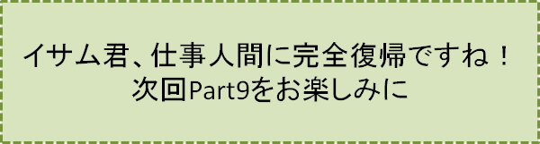

2センチの隙間-PART8-
『自由の身』の巻
笠原正雄
無罪放免された私は午後2時頃だったでしょう、浜ビーチホテルをチェックアウトします。
ホテルのドアから一歩外に出ると、真夏のお日様がまぶしさ一杯の光を投げかけて私を迎えてくれます。
ブルーに輝く夏の大空、雲一つない青空が目にしみます。
“あぁ解放された！ 自由の身全くすばらしいなぁ”
こんなことを思いながら階段を一歩一歩ゆっくり下ります。
目の前に広がる大通り、見上げる程に背が高く濃ーいグリーンの街路樹が、どこまでもどこまでも続く大通りです。
見ると、街路樹と街路樹の間に停車している大きな外車に人々の目が集っています。舞の町でも滅多に目にしない大きな外車です。
“8シリンダーの外車！？”
私は足を止めしばし目を奪われます。
この時でした。運転席のドアがゆっくり開き、何と！ 中村屋八郎九郎さんが軽く手を振りながら降りてくるではありませんか。
八郎九郎さんは、ドアサービスをする紳士だぞと言わんばかりに、助手席側に回ってドアをゆっくり開けます。
“あっ！ 千代江小母さん？！”
私は小さな叫び声をあげました。間違いありません！ 彼女は大きな花束を両腕に大切そうに抱えています。
普段は威風堂々辺りを払う貫録十分の中村屋八郎九郎さん、驚きです。
今日はまるで漫才師のような口調で笑みを浮かべながら
「はぁーい！ 中村屋タクシーでございますよ。どこまでお送りしましょう？」
と笑顔で声をかけてくれるではありませんか！。八郎九郎さんにこんな一面があったとは！ 大きな驚きです。
千代江小母さんは、こんな空気を全く無視するように私を見詰めながらゆっくり近づいてきます。頭をそっと下げ無言で花束を手渡してくれます。目に一杯涙を浮かべて私を見詰めています。
涙をこらえきれなかったのでしょう。一筋二筋、涙がほおを伝わります。
私は花束をしっかり両腕で受け取って深々と頭を下げ、千代江小母さんと連れ添うように外車に乗り込みます。
くるまに乗り込むと、ほっとしたのでしょう。シートにゆっくり腰を下ろした小母さんの顔には明るい笑顔が戻ります。いつもの千代江小母さんです。
私も精一杯明るく
「ビーチの丘までお願いしまぁーす」
と八郎九郎運転手さんに声をかけます。
丘の上に向っている九十九折（つづらおり）の側に、くるまがゆっくり止まります。
「我々はここで待っているからね」
という八郎九郎さんの声に送られて丘の上に登ります。
数分後岩崖の側（そば）に立つ私。眼下には浜清水の海が広がります。しょっぱい浜風浦風が迎えてくれます。風が私を包み込むように優しく、そして時に強く舞い上がります。
花束をゆっくりほどき、一本ずつ海に向って大空に向って放ちます。
“A子！ A子！ A子！”
との声、天国に届けとばかりに呼びかけながら色さまざまな花達を大空に放ちます。
気流に乗った花達、一本一本が鳥のように舞い上がり、太陽の光にキラッキラッと光りながらゆっくり海に向います。
赤橙黄緑青蘭紫七色の虹（にじ）に輝く花達が、空一杯に広がって風に乗りゆっくりゆっくり沖に向います。
“お兄さん！ お兄さん！ お兄さん！”
A子の明るい声がしっかり聞こえてきます。大空の彼方から浜清水の海の遥か向うから聞こえてきます。
目頭が熱くなるのを懸命にこらえて私も大きく叫びます。
“A子！ A子！ A子！”
と雲間に向って叫びます。何度も何度も叫びます。
“お兄さん！ お兄さん！ お兄さん！”
A子の声大空の向うから雲に乗って、こだまのように繰り返し聞こえてきます。
真夏のお日様が一段とまぶしく輝きます。水遣りの女神A子のまぶしげな顔、まなかひに浮かびます。
たっぷり一時間以上もの間九十九折の入り口近くでじっと待ってくれていた八郎九郎さんのくるまに乗車して「浜清水中央駅」に向います。
駅改札口まで見送ってくれた二人に別れを告げ、夕刻17時「浜清水ビーチ11号」に乗車し帰途に着きます。
膝の上に広げたお弁当、「浜清水駅」の改札口で千代江小母さんが手渡してくれた勝栗たっぷりのお弁当です！ 一口一口温かーくおいしいごはんです。
“お兄ちゃまは絶対無罪よ”
そんな千代江小母さんの声が耳に響いてきます。
車窓から見える山あいの景色はもはや夕闇（ゆうやみ）、目をこらして眺めて見ても鏡のようになった窓には私の顔が映っているだけです。
「ごち走さまでした！」
と言いながら幕之内弁当の空箱を大切にかばんの中にしまいます。
KIOSKで買い求めた新聞の経済欄ビジネス欄に目を通します。
久しぶりに読む新聞の記事に目を通すうち、次第に奈和中央のオフィスに勤める私に戻ります。
“私は有名IT企業に勤める超エリートサラリーマン”
という思いが戻ってくるのを覚えます。自分自身に大きな誇りを感じます。
浜清水から戻った翌日、全く何事もなかったように
「ただ今！」
という声とともに威勢よくオフィスに飛び込みます。
早朝既に出勤している仲間達が
「お帰りなさぁーい！」
と笑顔で迎えてくれます。
さあ仕事です！ 色々ありましたけれど奈和市のオフィスに舞い戻った私、仕事人間に完全復帰した私です。
